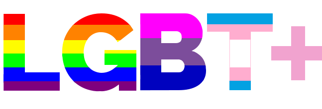

当咨询师遇到性少数：如何才能为性少数提供友好的心理咨询？
向阳花开LBGT
酷儿论坛
5月11日
酷儿论坛

motss2002
杭州酷儿论坛（motss.info）致力于为杭州及周边地区学生性少数人群提供一个多元、健康、平等的环境，促进自我认同和社会认可。

近年来，越来越多关于性少数人群（LGBT+）的议题出现在公共讨论当中。
但也总能看到还有人对性少数群体仍然抱有歧视和不理解的态度，认为性少数人群是“病态”的，甚至在心理咨询领域里，同样存在对性少数人群的误解。这样的误解造成了所谓的“纠正同性性倾向”等咨询误区。
作为性少数：我们和异性恋人群一样有各种心理困扰，同时我们面对的议题又和异性恋人群有显著差异。性少数经常会因为哪些事情来访，心理健康从业人员又该如何处理和应对呢？
作为一名咨询师/心理工作者
即使对性少数群体具备对多元、开放心态，心理健康从业人员在工作中仍困难重重...
你是否会因为来访的多元性别身份而产生一些困惑？
当来访者受困于不确定自己到底是不是性少数或属于哪一个类型时才发现自己也分不清楚。
当来访者试图去探索自己之所以是性少数的原因时，你是否也困惑这到底是后天的还是先天的？
当来访者说ta在考虑是否要形婚时，你是否也困惑形婚能否让一个人“变直”？
当来访跟家人出柜而遭到强烈的“镇压”并向你求助时，咨询师该怎么办？
作为一名咨询师/心理工作者
性少数来访，是你职业生涯中不免会遇到的议题。
来参加培训吧。增加自己对性与性别议题的了解，提升自己的胜任力，给自己的职业生涯拓宽一点选择？也为多元性别人群多一分理解友善与支持。
扫描二维码报名

如何才能为性少数提供友好的心理咨询？
向阳花开·杭州LGBT、北京同志中心以及彩虹暴力终结所即将联合在杭州主办了一场为期2天的性少数友善心理咨询培训。
我们希望通过培训，增进心理工作者们对相关概念的理解及对性少数群体生活各方面的了解，消除性取向相关的认知误区，
提高服务性少数群体的专业能力。
课程及时间安排
主讲人及内容梗概
第一天（5月26日 周六）
09:00–09:10
开幕式
向阳花开及北京同志中心工作人员致开幕欢迎辞
09:10–10:30
认识多元性别
暖阳
生理/认同/喜欢的性别分别所指什么？性倾向和性行为有关联吗？顺性别，跨性别，酷儿都有怎样含义？男性/女性气质，刻板印象，角色分工,这些都是如何和上述相互影响？多元性别部分将尝试解读这一切。
茶歇
10：45-12：00
性少数群体生存现状与挑战
刘鑫
同性恋一说的起源/性少数群体的生存现状及的核心议题。
12：00–13:00
午休
午餐及休息时间
13:00-18：00
临床工作分享
王芸
如何理解和走进LGBT人群的内心世界，如何面对LGBT群体开展咨询
茶歇
19：30-20：30
LGBT人群零距离1：
当心理咨询师与性少数群体面对面
LGBT社群人员分享
包括男同性恋、女同性恋、双性恋、跨性别等，讲述个人的自我认同的心路历程和成长故事。
晚21:00之后
（*自选活动）
LGBT人群零距离2：
同志酒吧探访
第二天（5月27日 周日）
9:00-11:30
LGBT人群的家暴现状及如何开展服务
李悦
1. 家庭暴力的定义，类型，目前的家暴情况（数据，案例）；
2. 性少数人群的家暴现状和家暴特点；
3. 社群家暴受暴者的心理支持的需求及特点。
11:30-13：00
午休
午餐及休息
13：00-15：30
浅析男同性恋群体的健康之艾滋病
卜佳青
艾滋病的基础知识、相关政策和法律；男同性恋群体中的艾滋病问题。男同性恋是艾滋病高发群体？男同性恋容易感染艾滋病？感染艾滋病等于毁了一生？这是真的吗？让我们一起来了解一个真实的疾病。
16：00-17:30
培训总结与交流
两位资深咨询师 周丽玉 史习
培训后体验与感受分享；问题集中解答环节
17:30-18:00
结课仪式
颁发证书留影
注：*号项目为自选项目，费用另计。
参加本次培训可以收获什么？
一、参加专业的LGBT人群心理咨询基础课程，获得对性少数群体全面、深层次的认识；
二、参与讨论丰富的LGBT人群案例，面对面接触性少数人群；
三、通过全程参与提交培训心得者：
1.获得北京同志中心颁发的培训结业证书；
2.经评估后可加入全国友善心理咨询师网络;
3.得到北京LGBT中心后续的讲座案例督导支持，以及更多心理咨询相关主题活动的邀约；
4.获得申请加入LGBT友善心理咨询机构及为性少数人群提供优质心理咨询服务的机会。
培训要求
1）本次培训为期两天，要求学员全程在场，不迟到，不早退，积极参与讨论和交流，以平等、尊重的态度对待在场人员；
2）培训中，学员应遵守中心规定及咨询相关伦理守则，案例讨论时不拍照、录音、录像；不将案例材料带出培训地点，也不在培训之外讨论案例材料；
3）因缺席、分心等个人原因导致培训效果不理想，经授课讲师及北京LGBT中心心理部门官员协商后，将不予颁发培训证书；
4）如确有原因需请假，可在之后举办的下一届友善咨询师培训中补听缺席课程；经补课完成全部课程后，学员可随补课该届学员一同获得培训证书并加入友善咨询师网络，并获得与其他友善咨询师同等的权益；
![]()
报名须知
【培训时间】2018年5月26日—5月27日（共计两整天）
【培训地点】地铁2号线沈塘桥站附近
【培训费用】600元/人（含两天培训材料费、茶歇等）
【培训方式】线下授课
【特别说明】报名不满20人将取消培训，报名费原路退回
【培训对象】
1）心理咨询、心理治疗从业人员
2）大专院校、中小学心理咨询中心心理咨询与辅导老师
3）社会工作者
4）医师（不限于精神科医师）、教师、政府工作人员、公益机构工作人员等
【报名方式】 扫描下方二维码缴费报名或点击文章最下方“阅读原文”
授课讲师介绍
暖阳
现任向阳花开·杭州LGBT项目部及设计部负责人，前杭州酷儿论坛站长（2010~2014）；向阳花开联合创始人。自2010年起参与性少数平权运动至今，曾多次策划发起杭州彩虹马拉松、517骄傲骑行、拉拉占领篮球场（杭州）等倡导活动，并在社群、校园内经常进行多元性别及同志运动等相关讲座。
刘鑫
心理咨询师、青年公益人。2012年开始学习心理咨询；国际存在-人本主义心理学院（IIEHP）心理治疗系统培训（2年）在读；简单心理Uni心理咨询师训练高阶；简单倾诉聆听者；持续接受人本主义心理咨询团体督导、一对一督导；心理学学士。2017年加入北京同志中心心理部门，致力于培育多元文化咨询视角下的中国性少数群体友善心理咨询师，开拓中国LGBT心理咨询服务、倡导、培训体系；倡导多元文化性别教育；探索如何用心理学方式服务于LGBT社群。
王芸
北京同志中心心理项目主管
心理咨询师
卜佳青
中共党员，上海青艾健康促进中心总干事。
2015年当选为德耀中华·第五届全国道德模范助人为乐模范候选人。上海市十大杰出青年志愿者、上海市青年岗位能手等荣誉称号。致力于同志群体的身心健康。
李悦
同语反家暴项目官员，彩虹暴力终结所协调人
周丽玉
浙旅院副教授、心理健康教育中心主任、心理健康课程教研室主任、浙江大学教育学硕士研究生
、国家二级心理咨询师、心理动力学取向心理咨询师、埃利克森取向注册催眠治疗师。
从事大学生心理健康教育工作十余年。2015年曾获得大学生心理健康教育工作“优秀工作者”荣誉称号。
擅长青少年心理、抑郁焦虑情绪调节、个人成长、LGBT等领域。
咨询取向：心理动力学取向咨询/埃里克森式催眠/焦点解决短程技术。
史习
心理咨询师，浙江越秀外国语学院讲师。心理咨询硕士，在英国东安吉利亚大学（UEA）接受心理咨询专业训练。曾就职于英国苏兰伯特中心（Sue Lambert Trust），为性侵犯受害者提供心理咨询服务。也曾就职于英国国家医疗系统（NHS）下属的诺里奇精神卫生中心（Norwich Mind），为精神疾病患者提供支持性心理咨询服务。
承办机构
向阳花开·杭州LGBT
一个由志愿者组成的服务杭州性少数群体的公益社团，成立于2010年11月。向阳花开取意于向阳花积极向上、追寻阳光的特质。我们憧憬未来的社会像向阳花开般温暖，努力营造一个更加多元、平等、和谐的社会。
北京同志中心
成立于2008年2月14日，作为一个在北京地区依靠志愿者和志愿性工作开展活动的公益性非营利组织，宗旨在于促进同志运动和多元文化的发展，提高LGBT群体的自我认同水平，反对基于性别认同和性倾向的歧视……
彩虹暴力终结所
成立于2016年6月25日，旨在为性和性别少数社群提供性别暴力直接干预服务，提高社群伙伴反抗暴力的意识和能力，同时提升直接服务者的干预技能，促进合作。
编辑 | 汤包
图片 | 网络
- THE END -
您的扩散是对我们的最大赞赏
点
阅读原文即可报名
长按二维码向我转账
“”

受苹果公司新规定影响，微信 iOS 版的赞赏功能被关闭，可通过二维码转账支持公众号。
微信扫一扫
关注该公众号
关注该公众号
使用小程序